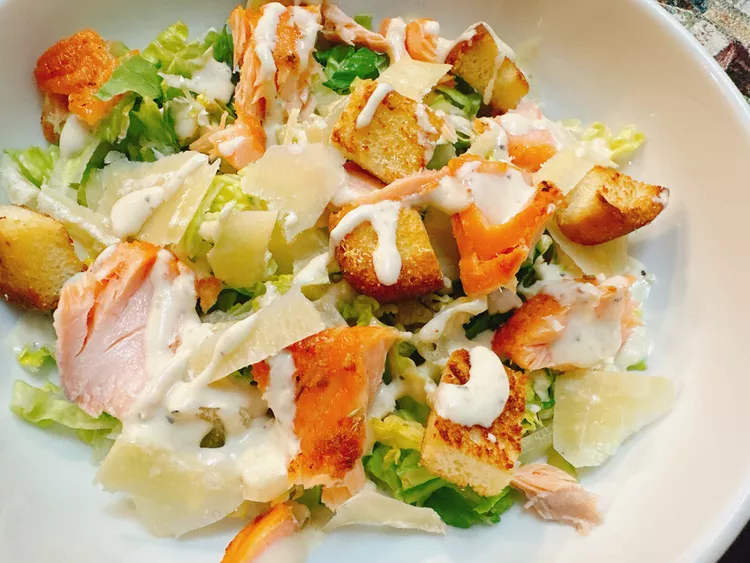

Salmon Caesar Salad

How to make Salmon Caesar Salad the healthy way
This salmon Caesar salad, with Romaine lettuce, topped with cold salmon, toasted croutons, and a homemade Caesar dressing, will be the salad you will make all summer long.
Ingredients
- 1 (8 ounce) salmon
- 2 teaspoons oil
- 2 teaspoons honey
- salt and freshly ground black pepper to taste
- 1 large egg
- 2 tablespoons lemon juice
- 2 teaspoons Worcestershire sauce
- 1 1/2 teaspoons Dijon mustard
- 2 cloves garlic, crushed
- 3 anchovies
- 1/4 cup freshly grated Parmesan cheese
- freshly ground black pepper to taste
- 1/2 cup olive oil
- 1 tablespoon butter
- 2 slices day-old bread, cut into cubes
- 1/2 teaspoon italian seasoning
- 1/4 teaspoon granulated garlic
- 1 head Romaine lettuce, torn into bite-sized pieces
- shaved Parmesan cheese for garnish
Steps
- Set a nonstick skillet over medium high heat. Heat 2 teaspoons oil until it shimmers. Add salmon, skin side down. Brush with honey; sprinkle with salt and pepper. Cover and cook for 4 minutes.
- Carefully flip salmon and reduce the heat to medium. Continue cooking until fish flakes easily with a fork, about 5 minutes more. Remove salmon to a plate or container; cover and refrigerate until very cold, at least 2 hours.
- For dressing, crack an egg into a food processor. Add lemon juice, Worcestershire, Dijon, garlic, anchovies, grated Parmesan and black pepper; pulse to combine. With food processor running, drizzle in oil until mixture emulsifies. Refrigerate dressing until needed.
- For croutons, melt butter in a heavy skillet over medium-high heat. Add bread cubes; sprinkle with Italian seasoning and granulated garlic.
- Toast until croutons are browned, about 5 minutes. Remove from heat; set aside.
- For salad, add lettuce to a large bowl. Flake salmon with a fork into bite-sized pieces and add to the bowl. Drizzle with Caesar dressing; top with croutons and shaved Parmesan.